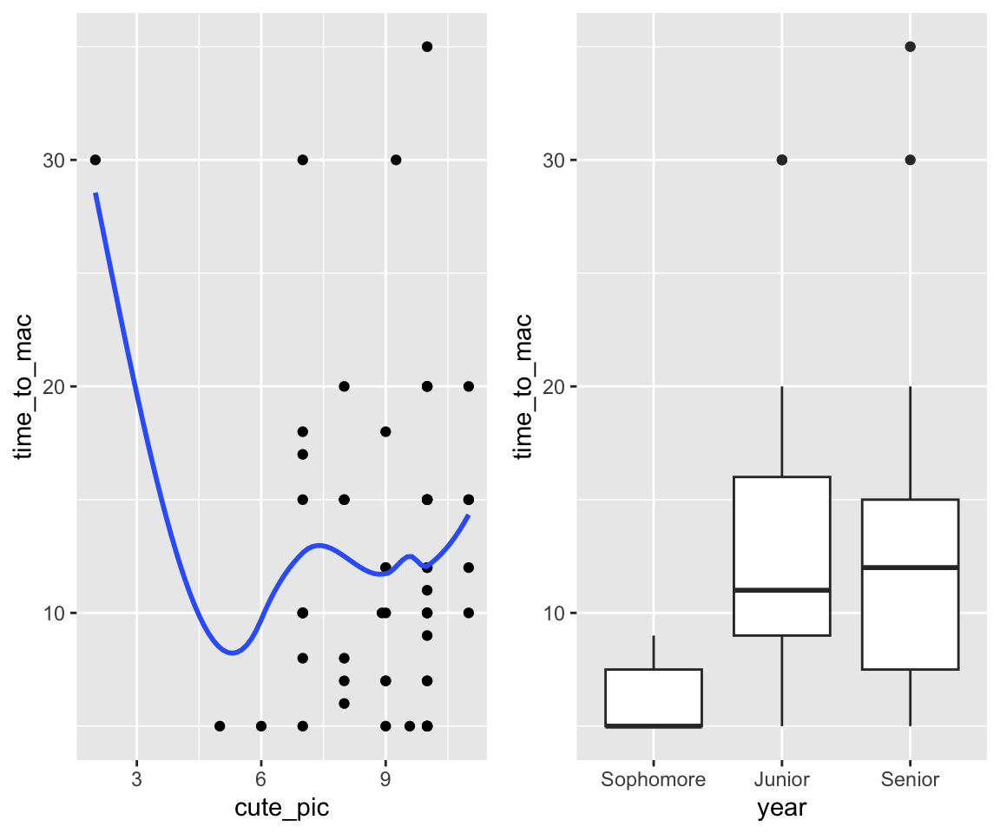

1 Introductions
Welcome!
- Sit where you want but don’t unpack completely… we’ll move in a few minutes.
- Meet the people around you.
- If you haven’t done so already, please fill out the information gathering survey (link on Moodle)!
Note: everything you need for class today is on the course website: https://kegrinde.github.io/stat253_coursenotes/
Learning Goals
- Meet your classmates and instructor
- Understand the basic structure of this course
- Identify the appropriate task (regression, classification, unsupervised) for a given research question
- Develop foundation to be able to formulate research questions that align with regression, classification, or unsupervised learning tasks
Brief Overview of STAT 253
What’s Machine Learning?
“Machine Learning” was coined back in 1959 by Arthur Samuel, an early contributor to AI.
From Kohavi & Provost (1998): Machine Learning is the exploration & application of algorithms that can learn from existing patterns and make predictions using data. (NOTE: humans are in charge of the exploration & application!)
In STAT 253 we will…
Pick up where STAT 155 left off, acquiring tools that can be used to learn from data in greater depth and a wider variety of settings. (STAT 155 is a foundational subset of ML!)
Explore universal ML concepts using tools and software common among statisticians (hence “statistical” machine learning).
Survey a breadth of modern ML tools and algorithms that fall into the workflow below. We’ll focus on concepts and applications over mathematical theory. Part of the cognitive load will be:
- keeping all the tools in place (what are they and when to use them)
- understanding the connections between the tools
- adapting (not memorizing) code to implement each tool

Supervised Learning
We want to model the relationship between some output variable \(y\) and input variables \(x = (x_1, x_2,..., x_p)\):
\[\begin{split} y & = f(x) + \varepsilon \\ & = \text{(trend in the relationship) } + \text{ (residual deviation from the trend `epsilon`)} \\ \end{split}\]
Types of supervised learning tasks:
regression: \(y\) is quantitative
example:
\(y\) = body mass index
\(x\) = (number of live births, age, marital status, education, etc)classification: \(y\) is categorical
example:
\(y\) = whether a pair of crickets courted (yes, no) \(x\) = (species, pair of same species, CHC profile, etc)
Unsupervised Learning
We have some input variables \(x = (x_1, x_2,..., x_p)\) but there’s no output variable \(y\). Thus the goal is to use \(x\) to understand and/or modify the structure of our data with respect to \(x\).
Types of unsupervised learning tasks:
- clustering
Identify and examine groups or clusters of data points that are similar with respect to their \(x_i\) values. example:- \(x\) = (body mass index at 2 weeks, 1 month, 2 months, 4 months, 6 months, etc)
- dimension reduction
Turn the original set of \(p\) input variables, which are potentially correlated, into a smaller set of \(k < p\) variables which still preserve the majority of information in the originals. example:- \(x\) = (cuticular hydrocarbon compounds concentrations based on gas chromatography analysis)
Meet Your Classmates!
I used a machine learning algorithm, one we’ll learn later this semester, to form groups based on your responses to the pre-course informational survey. BUT it didn’t provide any explanation of why these are the groups it picked. To that end, we need humans.
- Get into your assigned group.
- Introduce yourselves in whatever way you feel appropriate (ideas: name, pronouns, how you’re feeling at the moment, things you’re looking forward to, best part of summer, why you are motivated to take this class)
- Try to figure out why the algorithm put you into a group together. (I don’t personally know the answer!)
- Prepare to introduce your group to the bigger class:
- Each person will introduce themself
- One person will explain why they think the group was put together
Meet Your Instructor
A few highlights from my answers to the Pre-Course Information Gathering Survey…
Preferred name: “Kelsey” or “Professor Grinde”
Pronouns: she/her/hers
Hometown(s): Plymouth –> Northfield –> Seattle –> St. Paul
Can you tell me a bit about how you’ve been spending your time this summer? What’s been particularly important or meaningful to you? What brings you joy right now? What is on your mind? What do you do when you’re not in class?
Exercises
Instructions
- Discuss the following scenarios as a group, talking through your ideas, questions, and reasoning as you go
- I’ll move around to groups to check in on your progress and see what questions you have
- You can check your answers by clicking the drop-down “Solutions” button
Questions
Indicate whether each scenario below represents a regression, classification, or clustering task.
- How is the number of people that rent bikes on a given day in Washington, D.C. (\(y\)) explained by the temperature (\(x_1\)) and whether or not it’s a weekend (\(x_2\))?
Solution
regression. there’s a quantitative output variable \(y\).- Given the observed bill length (\(x_1\)) and bill depth (\(x_2\)) on a set of penguins, how many different penguin species might there be?
Solution
clustering. there’s no output variable \(y\).- How can we determine whether somebody has a certain infection (\(y\)) based on two different blood sample measurements, Measure A (\(x_1\)) and Measure B (\(x_2\))?
Solution
classification. there’s a categorical output variable \(y\).- Machine learn about each other! Scenario A.
I collected some data on STAT 253 students (you!) and analyzed it using a machine learning algorithm. In your groups: (1) brainstorm what research question is being investigated; (2) determine whether this is a regression, classification, or clustering task; and (3) summarize what the output tells you about your classmates.
Solution
classification (\(y\) = major is categorical)- Machine learn about each other! Scenario B.
Same directions as for Scenario A:

Solution
regression (\(y\) = time to mac is quantitative)- Machine learn about each other! Scenario C.
Same directions as for Scenario A:

Solution
clustering (no outcome \(y\)).- Use Spotify users’ previous listening behavior to identify groups of similar users.
Solution
clustering
- Predict workers’ wages by their years of experience.
Solution
regression (\(y\) = wages)- Predict workers’ wages by their college major.
Solution
regression (\(y\) = wages)- Use a customer’s age to predict whether they’ve seen the Barbie movie.
Solution
classification (\(y\) = whether or not watched the film)- Look for similarities among genetic samples taken from a group of patients.
Solution
clustering (no outcome \(y\))Wrap-Up
Scavenger Hunt
Take a few minutes to make sure you know how to find all of the following:
- course website
- syllabus
- textbook
- STAT 253 Slack
- office hour times and locations
- assignment deadlines
- information on what you need to complete before class each day
- in-class activities
- assignment instructions / submission
What’s next?
What to work on after class today:
- carefully review the syllabus
- if time allows, we’ll discuss a few highlights now!
- more to come in the next few class sessions
- join Slack
- update your versions of R/RStudio (see R and RStudio Setup)
- complete the pre-class tasks for Thursday (videos/reading/checkpoint)
- review the checkpoint recommendations/policies on Moodle before you start!
- start HW0 (due Friday)